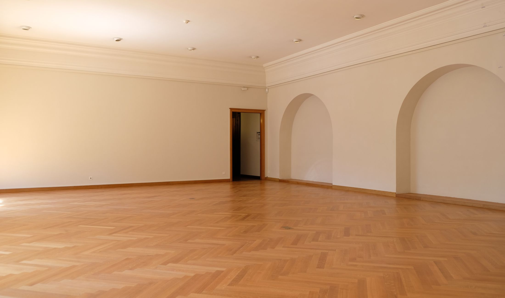
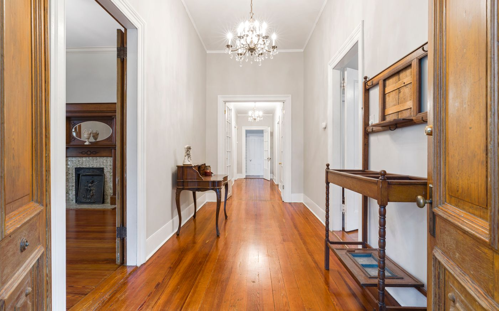
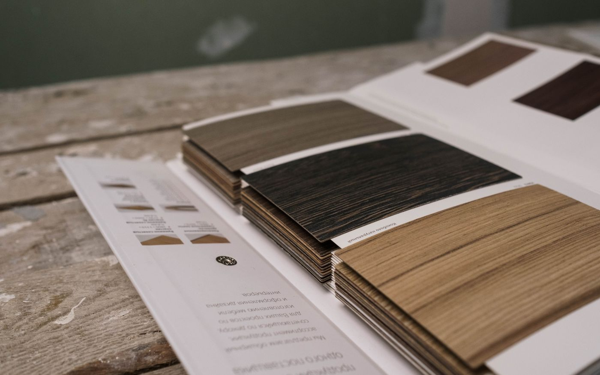
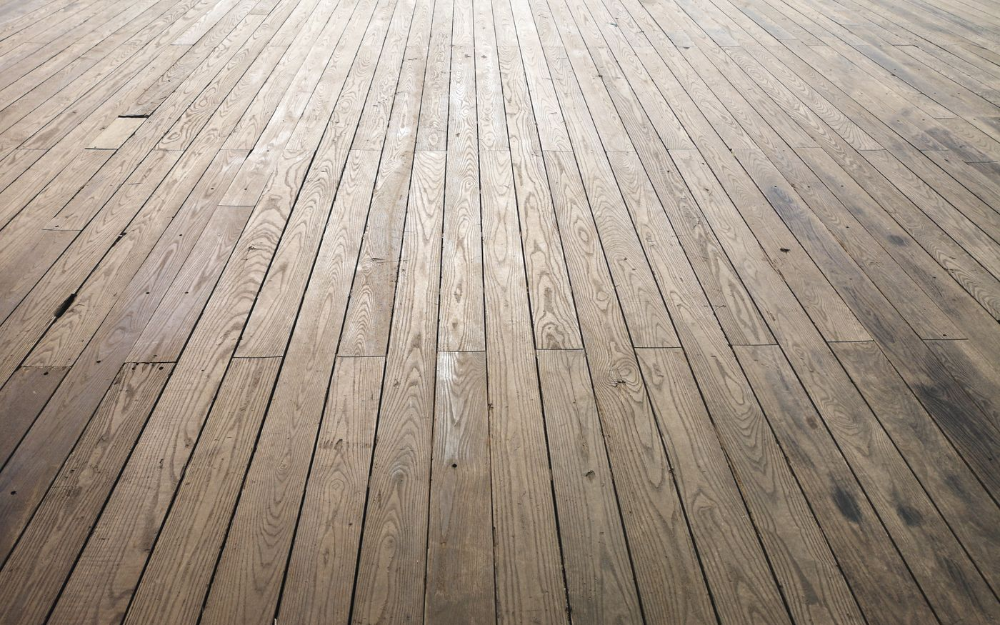
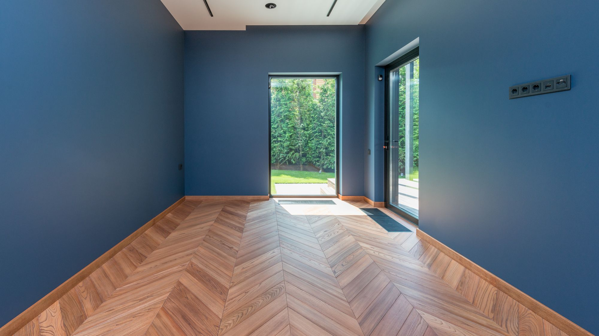
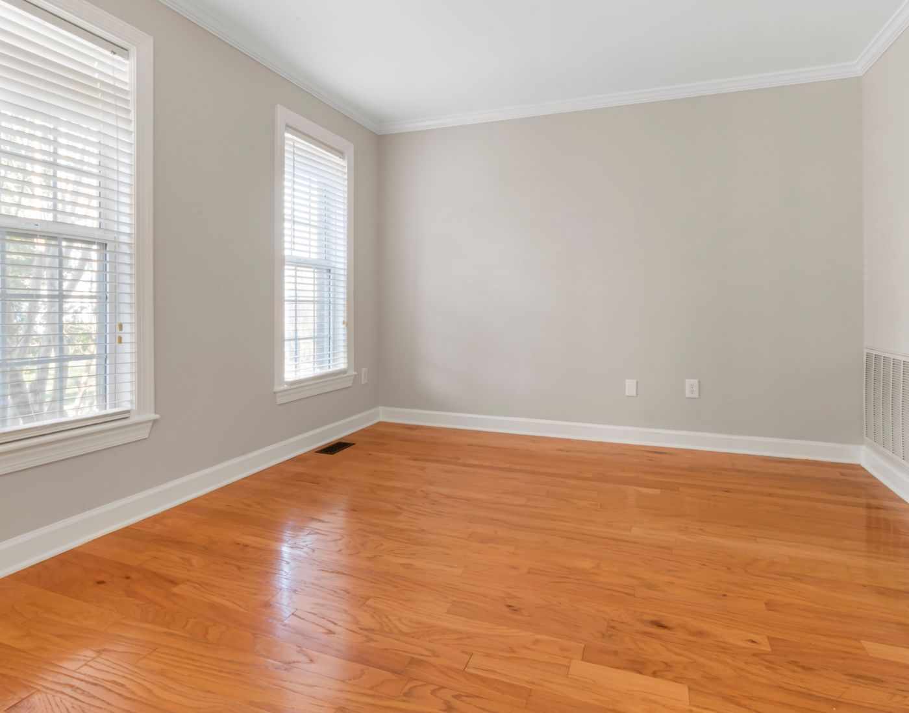

Trouver votre parquet
Références, essences, teintes et motifs
Le catalogue de parquets et le showroom de Premibel, notre partenaire pour les références produit.
Voir le catalogue Premibel premibel.fr
Média indépendant sur la pose de parquet
Sens de pose, motif, support, massif ou contrecollé : huit guides pour trancher avant de commander. Puis un simulateur gratuit pour voir le rendu dans votre pièce, à partir d’une photo — qui ne quitte jamais votre navigateur.
Nous orientons vers Premibel pour les références et Allure Design pour la pose en Île-de-France. Pourquoi ?
Pourquoi ce site
Huit erreurs reviennent en boucle sur les chantiers de parquet. Toutes se corrigent avant la pose, aucune après. Un sens de lame mal choisi, un support mal préparé, un calepinage approximatif : des décisions de quelques minutes qui se regardent pendant quinze ans.
Pose Parquet est un média indépendant français consacré à la pose de parquet. Le site publie des guides, des fiches de motifs et des tutoriels, et met à disposition un simulateur gratuit permettant de visualiser un parquet dans sa propre pièce. Pose Parquet ne vend pas de parquet et n’en pose pas : il oriente vers Premibel pour les références et vers Allure Design pour la pose en Île-de-France, et perçoit une rémunération à ce titre.
Outil gratuit · aucune inscription
Importez une photo de votre pièce, choisissez parmi 203 références et comparez les motifs au curseur. Six motifs sont documentés sur le site, dont cinq simulables dans nos outils. Le calcul se fait dans votre navigateur : votre photo n’est ni envoyée, ni stockée, ni analysée par un service tiers.
Votre photo reste sur votre appareil. Contrairement aux simulateurs des fabricants, aucun envoi vers un serveur, aucun compte à créer, aucun catalogue imposé.
 Avant
Après
Avant
Après
Par où commencer
Elles se prennent dans cet ordre. Commencez par celle qui vous concerne aujourd’hui.
Support, sens de pose, massif ou contrecollé : ce qui se décide avant de commander.
02De la pose droite au point de Hongrie : le motif fait le caractère de la pièce.
03Votre photo, un parquet, un motif : le sol change à chaque clic.
04Quatre étapes courtes pour cadrer la pièce, le support et le besoin.
Guides et tutoriels
Les guides tranchent les décisions d’achat. Les tutoriels déroulent le chantier, outillage et points de contrôle compris.



Vous préférez confier la pose ? Décrivez votre projet.

Focus motif · 04
Les lames, coupées en biais à leurs extrémités, forment une pointe qui file vers le fond de la pièce et guide le regard.
Tout se joue au traçage : un écart minime en début de pose se cumule et finit par se voir sur toute la longueur.
Elles se commandent ensemble, en quantités égales, avec une marge de chutes plus large qu’une pose droite.
Inspiration
Questions fréquentes
Six questions qui reviennent avant chaque chantier, et les réponses que nous donnons.
Les deux formulations décrivent le même geste, ce qui explique la confusion fréquente. Les rayons entrent perpendiculairement au plan de la fenêtre : poser « dans le sens de la lumière » revient donc à orienter les lames perpendiculairement au mur qui porte la fenêtre. Les joints filent alors dans l’axe des rayons et se remarquent beaucoup moins.
Dans la longueur, parallèlement aux murs. Une pose en travers multiplie les coupes, hache visuellement le passage et raccourcit l’espace. C’est le seul cas courant où la géométrie prime sur la lumière : un couloir se pose dans son axe, même si la fenêtre se trouve à son extrémité.
Le bâton rompu assemble des lames à bouts droits, posées perpendiculairement les unes aux autres : les extrémités se décalent et forment un zigzag. Le point de Hongrie utilise des lames coupées en biais qui se rejoignent bout à bout en une pointe continue. Il exige des lames gauches et droites, en quantités égales.
Comptez de l’ordre de 5 % en pose droite et 10 à 15 % en diagonale ou en point de Hongrie, ces motifs multipliant les coupes d’angle en périphérie. Prévoyez la marge au moment de la commande : un complément acheté plus tard peut provenir d’un autre bain de teinte.
En pose flottante, c’est généralement possible si le carrelage est sain, adhérent et suffisamment plan. Contrôlez la planéité à la règle de deux mètres et vérifiez la hauteur disponible sous les portes et aux seuils : c’est le point qui bloque le plus souvent le projet, pas le support lui-même.
Le simulateur est gratuit et ne demande aucune inscription. Votre photo n’est ni envoyée, ni stockée, ni analysée par un service tiers : le rendu est calculé dans votre navigateur, sur votre appareil. Vous disposez de 203 références et de trois motifs de pose, avec un comparateur avant / après.
Après le choix
Nous ne vendons pas de parquet et nous n’en posons pas. Nous vous aidons à savoir ce qu’il vous faut, puis nous vous adressons à ceux qui le font.
Trouver votre parquet
Le catalogue de parquets et le showroom de Premibel, notre partenaire pour les références produit.
Voir le catalogue Premibel premibel.frFaire poser ou rénover
Pose de parquet, rénovation intérieure et aménagement par Allure Design, notre partenaire pose en Île-de-France.
Décrire mon projet de poseBesoin du parquet et de la pose ? Décrivez votre projet : nous vous orientons vers les deux. Comprendre nos liens commerciaux
Votre projet
Quatre questions courtes sur votre pièce, votre support et votre besoin. Aucune coordonnée demandée. À la fin, vous repartez avec une fiche projet claire — surface, support, motif, contraintes.
